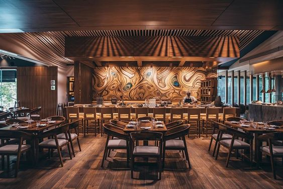

<div class="container.fluid">
  <div class="row">
    <div class="col-md-6">
      <div class="col-md-6">
        
      </div>
      <div class="col-md-6 col-md-6-content text-center">
        <h1>Japon: Un Viaje Culinario a la Perfección</h1>
        <p class="mt-3">
          Japón, tierra de contrastes y delicadeza, nos invita a un viaje culinario donde cada bocado es una expresión artística y un tributo a la naturaleza. En las animadas calles de Tokio y los serenos jardines de Kioto, la cocina japonesa se convierte en una danza delicada de sabores y tradiciones.
        </p>
      </div>
      <div class="text-center mt-3">
          <button class="btn btn-outline-secondary mb-2 mr-2">Reservar</button>
      </div>
    </div>
    <div class="col-md-6">
      <router-outlet></router-outlet>
    </div>
  </div>
</div>


